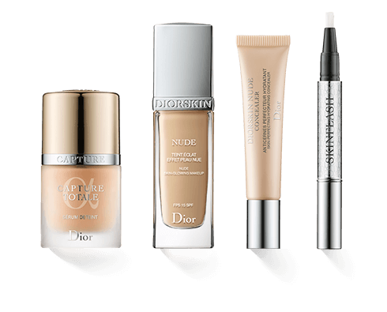

Was und wer ist VIAN COSMETICS?
Damit Ihr indess erkennt, woher dieser ganze Irrthum gekommen ist, und weshalb man die Lust anklagt und den Schmerz lobet, so will ich Euch Alles eröffnen und auseinander setzen, was jener Begründer der Wahrheit und gleichsam Baumeister des glücklichen Lebens selbst darüber gesagt hat. Niemand, sagt er, verschmähe, oder hasse, oder fliehe die Lust als solche, sondern weil grosse Schmerzen ihr folgen, wenn man nicht mit Vernunft ihr nachzugehen verstehe. Ebenso werde der Schmerz als solcher von Niemand geliebt, gesucht und verlangt, sondern weil mitunter solche Zeiten eintreten, dass man mittelst Arbeiten und Schmerzen eine grosse Lust sich zu verschaften suchen müsse. Um hier gleich bei dem Einfachsten stehen zu bleiben, so würde Niemand von uns anstrengende körperliche Uebungen vornehmen, wenn er nicht einen Vortheil davon erwartete. Wer dürfte aber wohl Den tadeln, der nach einer Lust verlangt, welcher keine Unannehmlichkeit folgt, oder der einem Schmerze ausweicht, aus dem keine Lust hervorgeht?
Wie werden unsere Produkte hergestellt?
Dagegen tadelt und hasst man mit Recht Den, welcher sich durch die Lockungen einer gegenwärtigen Lust erweichen und verführen lässt, ohne in seiner blinden Begierde zu sehen, welche Schmerzen und Unannehmlichkeiten seiner deshalb warten. Gleiche Schuld treffe Die, welche aus geistiger Schwäche, d.h. um der Arbeit und dem Schmerze zu entgehen, ihre Pflichten verabsäumen. Man kann hier leicht und schnell den richtigen Unterschied treffen; zu einer ruhigen Zeit, wo die Wahl der Entscheidung völlig frei ist und nichts hindert, das zu thun, was den Meisten gefällt, hat man jede Lust zu erfassen und jeden Schmerz abzuhalten; aber zu Zeiten trifft es sich in Folge von schuldigen Pflichten oder von sachlicher Noth, dass man die Lust zurückweisen und Beschwerden nicht von sich weisen darf. Deshalb trifft der Weise dann eine Auswahl, damit er durch Zurückweisung einer Lust dafür eine grössere erlange oder durch Uebernahme gewisser Schmerzen sich grössere erspare.

Unser Team
Dagegen tadelt und hasst man mit Recht Den, welcher sich durch die Lockungen einer gegenwärtigen Lust erweichen und verführen lässt, ohne in seiner blinden Begierde zu sehen, welche Schmerzen und Unannehmlichkeiten seiner deshalb warten. Gleiche Schuld treffe Die, welche aus geistiger Schwäche, d.h. um der Arbeit und dem Schmerze zu entgehen, ihre Pflichten verabsäumen. Man kann hier leicht und schnell den richtigen Unterschied treffen; zu einer ruhigen Zeit, wo die Wahl der Entscheidung völlig frei ist und nichts hindert, das zu thun, was den Meisten gefällt, hat man jede Lust zu erfassen und jeden Schmerz abzuhalten; aber zu Zeiten trifft es sich in Folge von schuldigen Pflichten oder von sachlicher Noth, dass man die Lust zurückweisen und Beschwerden nicht von sich weisen darf. Deshalb trifft der Weise dann eine Auswahl, damit er durch Zurückweisung einer Lust dafür eine grössere erlange oder durch Uebernahme gewisser Schmerzen sich grössere erspare.
Kontaktdaten
Dagegen tadelt und hasst man mit Recht Den, welcher sich durch die Lockungen einer gegenwärtigen Lust erweichen und verführen lässt, ohne in seiner blinden Begierde zu sehen, welche Schmerzen und Unannehmlichkeiten seiner deshalb warten.
VIAN COSMETICS
viancosmetics@gmail.com
+41 123 456 78 90